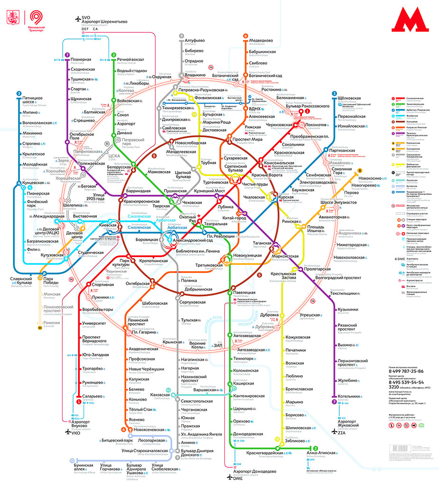

Беды транспорта в Москве
Куда
пропали
трамваи?!
Придется ехать на метро!
Прочитать про метро подробнее
Виды транспорта
метро
трамвай
автобус
такси
от 549 руб
Расписание движения трамваев
Расписание движения метро
10:00
- отменен
12:00
- отменен
14:00
- отменен
16:00
- отменен
18:00
- отменен
Ходит каждые 5 минут
Карта метро
